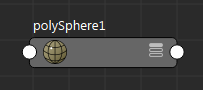
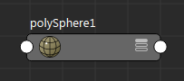
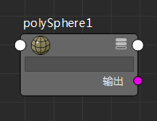
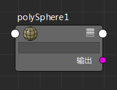
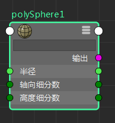
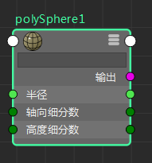
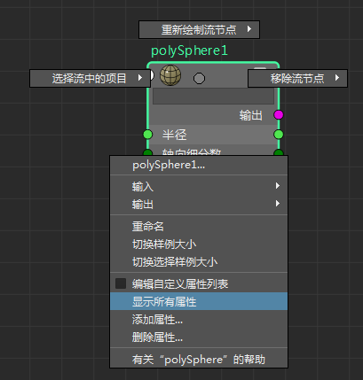

若要打开“节点编辑器”(Node Editor)，请选择。
“节点编辑器”(Node Editor)提供依赖关系图的可编辑图解，显示节点及其属性之间的连接。允许您查看、修改和创建新的节点连接。“节点编辑器”(Node Editor)对于角色装备等任务有效，但在处理材质和着色网络时，建议使用 Hypershade 编辑器。
第一次打开“节点编辑器”(Node Editor)时，会在您的场景视图中绘制选定对象。
节点视图模式
在“节点编辑器”(Node Editor)中可通过以下五种方式查看节点：简单模式、已连接模式、完全模式、查看所有属性或查看自定义属性。
-
简单模式显示一个输入和一个输出主端口，以圆形表示。
 图标也表示您处于简单模式。

图标也表示您处于简单模式。
 -
已连接模式显示输入和输出主端口，以及任何已连接属性。这些属性具有自己的端口，均显示为小圆形。
 图标也表示您处于已连接模式。

图标也表示您处于已连接模式。
 -
完全模式显示输入和输出主端口，以及主要节点属性。给定节点的主属性集基于属性的特性，例如，它们是可设定关键帧还是为动态。
 图标也表示您处于完全模式。

图标也表示您处于完全模式。
 -
您可以从节点标记菜单中选择“显示所有属性”(Show All Attributes)选项，将节点的完全模式暂时替换为所有属性的列表。所有属性的显示仅对该绘制实例有效。如果对节点重新制图，或者更改节点的视图模式，则必须重新选择此选项才可再次显示其所有属性。请参见“节点编辑器”(Node Editor)标记菜单。对于没有关联自定义属性列表的节点，也可以使用热键 4 显示其所有属性。
注： 当显示所有属性时，节点将显示为完全模式 图标。
-
您也可以自定义针对每个节点显示的属性列表。要创建自定义属性列表，请在节点上单击鼠标右键，然后选择“编辑自定义属性列表”(Edit Custom Attribute List)。创建自定义属性列表后，单击
 或热键 4，以在其自定义属性视图中显示选定节点。请参见在“节点编辑器”(Node Editor)中自定义节点属性列表。
或热键 4，以在其自定义属性视图中显示选定节点。请参见在“节点编辑器”(Node Editor)中自定义节点属性列表。
此视图模式下的节点未显示有过滤器字段。若要显示过滤器字段，请单击
 。
。
 注： 如果已为节点保存对应的自定义属性视图，则按热键 4 将在其自定义视图中显示它， 位于右上角。如果未为节点保存对应的自定义属性视图，则按热键 4 将在完全模式下显示它， 位于右上角。
注： 如果已为节点保存对应的自定义属性视图，则按热键 4 将在其自定义视图中显示它， 位于右上角。如果未为节点保存对应的自定义属性视图，则按热键 4 将在完全模式下显示它， 位于右上角。
输入属性将显示在完整模式的节点左侧。而输出属性则显示在完整模式的节点右侧。若要展开节点的属性列表，请单击属性旁边的  。如果属性可以作为输入或输出进行连接，则在节点的左侧和右侧都提供端口。可按住快捷键 Shift 并单击复合属性的 （加号）图标展开其所有子属性层。或者，也可以按住此快捷键并单击复合属性的
。如果属性可以作为输入或输出进行连接，则在节点的左侧和右侧都提供端口。可按住快捷键 Shift 并单击复合属性的 （加号）图标展开其所有子属性层。或者，也可以按住此快捷键并单击复合属性的  （减号）图标收拢其所有子属性层。
（减号）图标收拢其所有子属性层。
有关节点连接的详细信息，请参见显示连接。